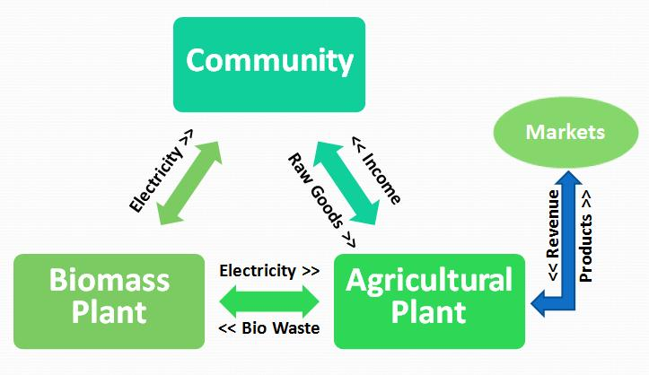

Tseai Energy Unlimited begins
Agriculture, processing and renewable-energy concepts are developed with Sierra Leone at the center.
Vitel Farms is a Sierra Leonean agribusiness. Cassava is the current flagship inside a broader long-term platform.
Vitel’s story reaches back to Tseai Energy Unlimited (TEU), a Sierra Leone-focused agriculture and renewable-energy venture founded by Trevor Young around 2009.
Historical records document Kambia-focused work across agriculture, processing and farmer-market systems. That work paused; Vitel Farms is the next chapter.
History standard: historical facts establish lineage. They are not presented as current Vitel operating scale.
Trevor Young founded the predecessor venture and is leading the Vitel Farms rebuild. The through-line is practical: improve how Sierra Leonean agriculture connects production, processing, farmers and markets.
Cassava is the current focus because it already has national reach and multiple market pathways. The aim is to prove a commercially sound system before expanding the Vitel platform further.
These materials document TEU’s history. They do not represent current Vitel operations.

Agriculture, processing and renewable-energy concepts are developed with Sierra Leone at the center.
Historical correspondence and project materials document agricultural-development and processing activity.
Research and business-planning materials reposition the venture around cassava farming, processing and markets.
The strategy is rebuilt around verification, farmer networks, market-led production and measurable cassava value creation.
Claim only what can be supported.
Produce toward real demand.
Build with independent producers.
Scale what can sustain itself.
Pursue resilience and circular value where it makes technical and commercial sense.
Separate history, current operations, plans and ambitions.
More than 300,000 Sierra Leonean holdings grow cassava. Its reach and market pathways make it a strong first platform for Vitel.